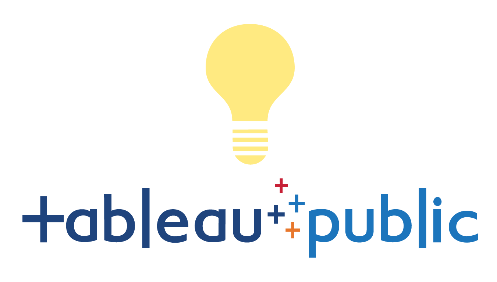

In my Business Intelligence course, we learned basic concepts, fundamental information theories, and methodologies in business intelligence, core techniques/algorithms for data analytics, including classification, prediction, clustering, association rule mining, advanced data mining techniques, and hands-on practices of primary data mining techniques with real-world business applications, using Python. Click below to view projects I've conducted outside and inside of this course.

For my advanced database course, we learned about PL/SQL language and made procedures, packages, and functions to promote actions within the Oracle database. The following are present my exams, and project conducted in this course, presenting my skills in PL/SQL in oracle databases.

In this project we used Microsoft SQL Server to explore global COVID 19 data using differet queries.

We pushed various queries from the Covid-19 data exploration project into a dashboard of different tables, charts, and maps to display our findings.
Using Excel, I conducted an entire project, importing raw data, cleaning it, and using it to create pivot tables and a dashboard of views. The image above presents a snapshot of the dashboard and the information. Click on the button below to view the project for more detail.

For my database management course, two classmates and I constructed a database using ERD and relational diagrams. We created our tables, used different queries to join these tables, and explored valuable information in MySQL. Click below to view the project report presenting a walk-through of our thought process.